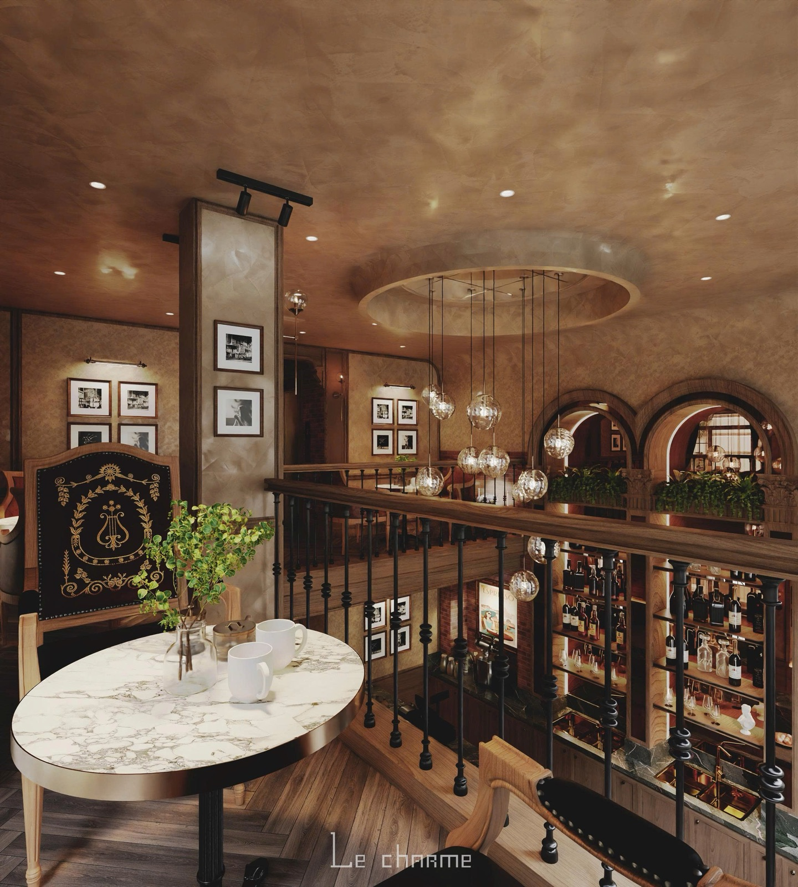
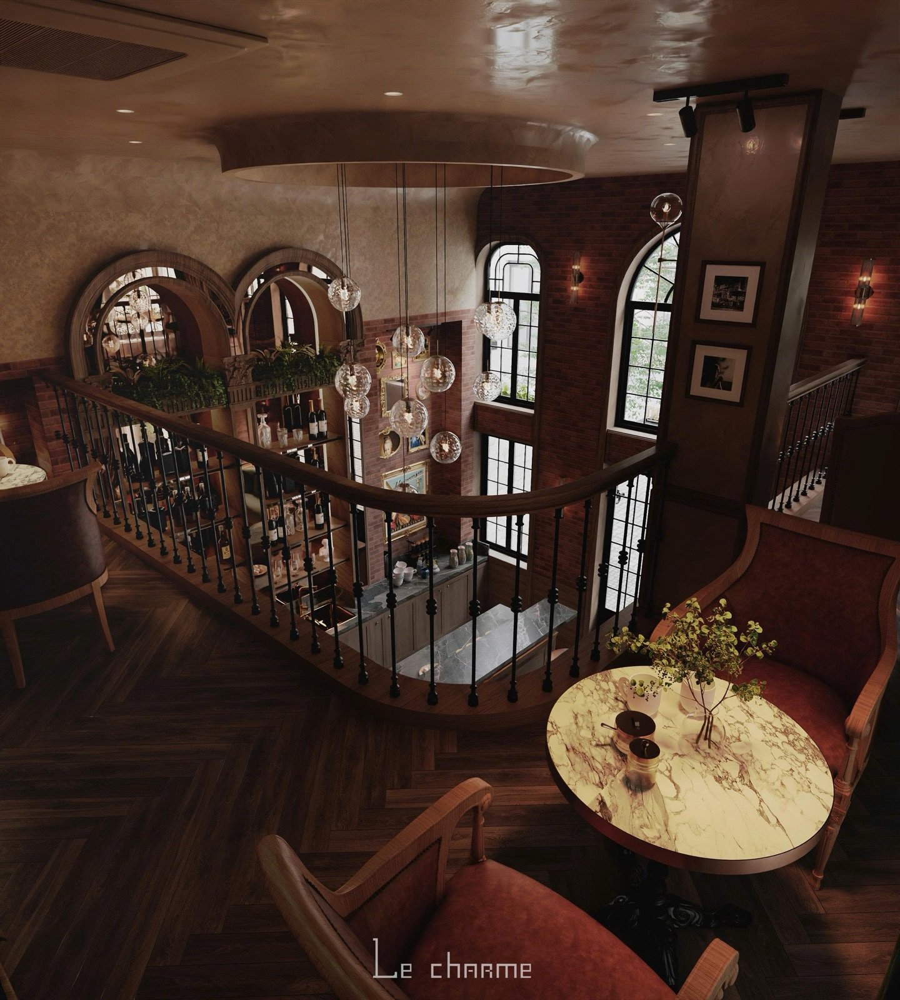

The Concept
A Classic European Apartment, Designed for Both Sunlit Coffee & Midnight Wine
Fukurai Premium Café & Bistro was created to feel less like a commercial venue and more like an intimate, classic European residence. Tucked away from the rush of the city, our two-story space pairs dark timber paneling, arched brick windows, and emerald velvet seating with warm pendant lighting that shifts effortlessly from morning clarity to evening warmth.
By day, guests gather around marble tables for freshly pulled espresso, velvety cappuccinos, and comforting pasta dishes in a quiet setting ideal for conversation or focused work. When evening arrives, the same space transforms into a refined cocktail and wine bistro featuring bespoke drinks tailored to your palate—Floral, Sour, Balanced, or Sweet—paired with pan-seared salmon, beef steak, and artisanal cold cuts.
Whether you visit for a quiet morning ritual or an unhurried evening with friends, our mezzanine lounge and main bar are designed to make every guest feel at home. Have a question about our menu or private bookings? Try our AI concierge in the bottom-right corner.




Daytime Ritual
8:00 AM – 5:00 PM. Specialty espresso, creamy lattes, and freshly made pasta beneath natural daylight.
Evening Bistro
5:00 PM – 11:30 PM. Bespoke cocktails, fine wines, and European mains in a candlelit mezzanine setting.
Private Gatherings
Intimate corner booths and upper-level seating available for small celebrations and curated workshops.